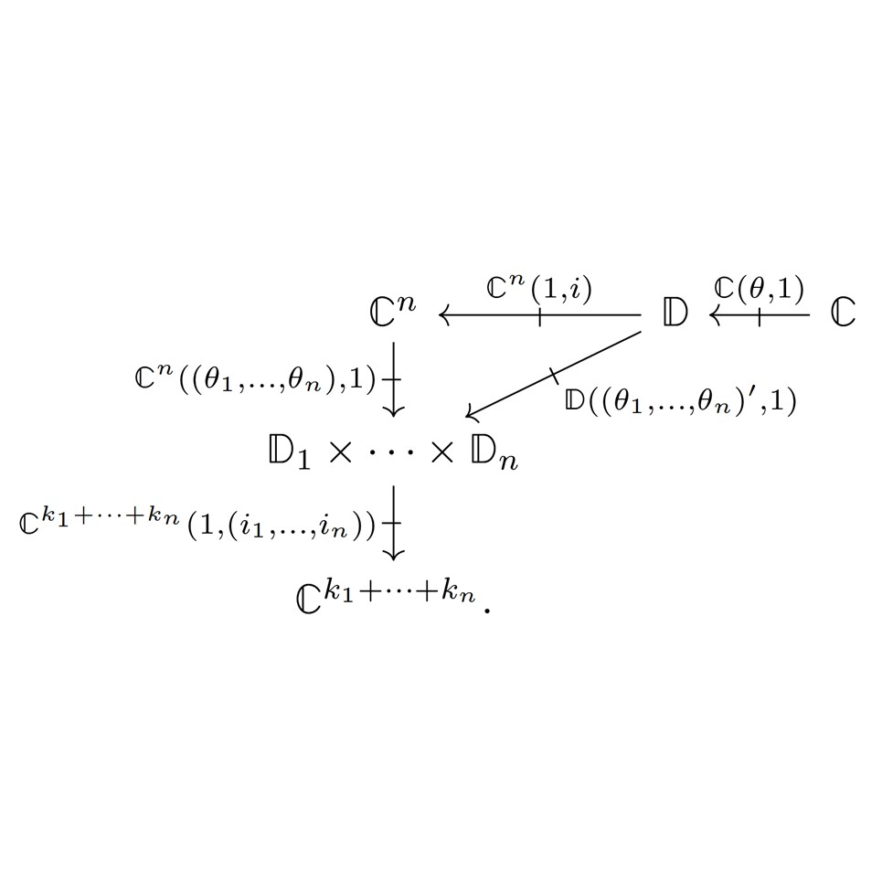

<!DOCTYPE html>
<html lang="en_UK>
<head>

<meta name="google-site-verification" content="ybpGqW0Fo_7szeqYJRGTEy5kT5kZ8lEbx6AOJtoyaj8" />

<meta charset="UTF-8">
<meta name="viewport" content="width=device-width, initial-scale=1">

<title>Joshua Wrigley</title>

<style>

body {font-family: Georgia, serif; padding: 30px; text-align: center; background: honeydew;}

.contentbox {padding: 30px; background: lightcyan;}


/* The header */

.textbox {margin: auto; text-align: justify; width: 50vw;}

.flex-container-header {
  display: flex;
  align-items: stretch;
  flex-wrap: wrap;
}

.flex-container-header-subdiv {
  flex: 20%;
  text-align: justify;
}

.portrait {
  flex: 20%;
  min-width: 100px;
  padding: 10px;
  margin: 5px;
}


/* The main body */

.flex-container {
  display: flex;
  align-items: stretch;
  background-color: gainsboro;
  flex-wrap: wrap;
  padding:5px;
}

.flex-container>div {
  background-color: darkseagreen;
  color: white;
  flex: 20%;
  text-align: justify;
  min-width: 100px;
  max-width: 400px;
  padding: 10px;
  margin: 5px;
}

p a:link {color: inherit; text-decoration: none;}
p a:visited {color: inherit; text-decoration: none;}
p a:hover {color: inherit; text-decoration: underline;}


/* The Navbar */


.navbar {
  display: flex;
  background-color: grey;
}


.navbar a {
  color: white;
  padding: 14px 20px;
  text-decoration: none;
  text-align: center;
}


.navbar a:hover {
  background-color: gainsboro;
  color: black;
}

@media screen and (max-width: 300px) {
  .navbar {   
    flex-direction: column;
  }
}


</style>
</head>
<body>

<div class="contentbox">
	<h1 style="font-size: min(8vw,40pt);">Joshua L. Wrigley</h1>
	
	<div class="textbox">


	<! ---- Header ---- >
	<div class="flex-container-header">

	<div class="flex-container-header-subdiv">
	<p>I am currently a post-doc at Université Paris Cité working with <a href="https://samvangool.net/" target="_blank">Sam van Gool</a>.
 
	<p>Before that, I was a post-doc at at Queen Mary University of London, working with <a href="https://webspace.maths.qmul.ac.uk/i.tomasic/" target="_blank">Ivan Tomašić</a>.  I completed my PhD under the supervision of <a href="https://www.oliviacaramello.com/" target="_blank">Olivia Caramello</a> at the University of Insubria, studying topos theory.

	<p>My research involves the interaction between mathematical logic, topology, and category theory.  I am especially interested in topos-theoretic approaches to model theory.</p>

	<p>E-mail: <a href="mailto:wrigley@irif.fr">wrigley@irif.fr</a>
	<br>
	Address: Building Sophie Germain, 8 place Aurélie Nemours, 75013 Paris.
	<br>
	My CV is available <a href="CV/CV-Wrigley.pdf" target= "_blank" title="An academic CV.">here</a>.
	</p>
	</div>

	<div class="portrait">
	<a href="Images/portraitLarge.png" target="_blank">
	
	</a>
	</div>

	</div>
</div>


<div class="flex-container">

<div>
	<a href="https://doi.org/10.60866/CAM.227" target="_blank">
	
	</a>
	<p><a href="https://doi.org/10.60866/CAM.227" target="_blank" title="Link to Early View"><b>On topological groupoids that represent theories,</b></a>
	Zeitschrift für Mathematische Logik und Grundlagen der Mathematik: to appear (2026).</p>
</div>

<div>
	<a href="https://arxiv.org/abs/2507.04526" target="_blank">
	
	</a>
	<p><a href="https://arxiv.org/abs/2507.04526" target="_blank" title="arXiv:2507.04526"><b>On the theories classified by an étendue,</b></a>
	Preprint (2025).</p>
</div>

<div>
	<a href="https://arxiv.org/abs/2506.09788" target="_blank">
	
	</a>
	<p><a href="https://arxiv.org/abs/2506.09788" target="_blank" title="arXiv:2506.09788"><b>Ultracategories via Kan extensions of relative monads,</b></a>
	with Umberto Tarantino, Preprint (2025).</p>
</div>


<div>
	<a href="https://arxiv.org/abs/2504.06200" target="_blank">
	
	</a>
	<p><a href="https://arxiv.org/abs/2504.06200" target="_blank" title="arXiv:2504.06200"><b>Day algebras,</b></a>
	with Edmund Robinson, Preprint (2025).</p>
</div>

<div>
	<a href="http://tac.mta.ca/tac/volumes/41/35/41-35abs.html" target="_blank">
	
	</a>
	<p><a href="http://tac.mta.ca/tac/volumes/41/35/41-35abs.html" target="_blank" title="Link to TAC"><b>Some properties of internal locale morphisms externalised,</b></a>
	<i>Theory and Applications of Categories</i>, Vol. 41, No. 35, pp. 1160-1202 (2024).</p>
</div>

<div>
	<a href="https://arxiv.org/abs/2408.15848" target="_blank">
	
	</a>
	<p><a href="https://arxiv.org/abs/2408.15848" target="_blank" title="arXiv:2408.15848"><b>Topoi with enough points and topological groupoids,</b></a> Preprint (2024).</p>
</div>


<div>
	<a href="https://arxiv.org/abs/2406.02788" target="_blank">
	
	</a>
	<p><a href="https://arxiv.org/abs/2406.02788" target="_blank" title="arXiv:2406.02788"><b>Existentially closed models and locally zero-dimensional toposes,</b></a>
	with Mark Kamsma, Preprint (2024).</p>
</div>

<div>
	<a href="http://www.tac.mta.ca/tac/expositions/articles/2/te2abs.html" target="_blank">
	
	</a>
	<p><a href="http://www.tac.mta.ca/tac/expositions/articles/2/te2abs.html" target="_blank" title="Link to TAC"><b>The representing localic groupoid for a geometric theory,</b></a>
	with Graham Manuell, <i>Expositions in Theory and Applications of Categories</i> No. 2 (2024).</p>
</div>

<div>
	<a href="thesis/thesis_wrigley.pdf" target="_blank">
	
	</a>
	<p><a href="thesis/thesis_wrigley.pdf" target="_blank" title="My PhD thesis."><b>Doctrinal and groupoidal representations of classifying topoi,</b></a>
	PhD thesis (2024).</p>
</div>

<!--
<div>
	<a href="https://youtu.be/AhFjA-AdlsQ?feature=shared" target="_blank">
	
	</a>
	<p><a href="https://youtu.be/AhFjA-AdlsQ?feature=shared" target="_blank" title="A YouTube recording."><b>Topological groupoids for classifying toposes,</b></a>
	Talk at ItaCa Fest (2023).</p>
</div>
-->

<!--
<div>
	<a href="https://www.youtube.com/watch?v=R8LnkXyzQLw&t=1s" target="_blank">
	
	</a>
	<p><a href="https://www.youtube.com/watch?v=R8LnkXyzQLw&t=1s" target="_blank" title="A YouTube recording."><b>The geometric and sub-geometric completions of doctrines,</b></a>
	Talk at SYCO11 (2023).</p>
</div>
-->

<div>
	<a href="https://arxiv.org/abs/2304.07539" target="_blank">
	
	</a>
	<p><a href="https://arxiv.org/abs/2304.07539" target="_blank" title="arXiv:2304.07539"><b>The geometric completion of a doctrine,</b></a>
	Preprint (2023).</p>
</div>

<!--
<div>
	<a href="https://www.youtube.com/watch?v=KB3MYRVPc34" target="_blank">
	
	</a>
	<p><a href="https://www.youtube.com/watch?v=KB3MYRVPc34" target="_blank" title="A YouTube recording."><b>A topos-theoretic perspective on properly discontinuous actions,</b></a>
	Talk at 2nd ItaCa workshop (2021).</p>
</div>
-->

</div>


</body>
</html>